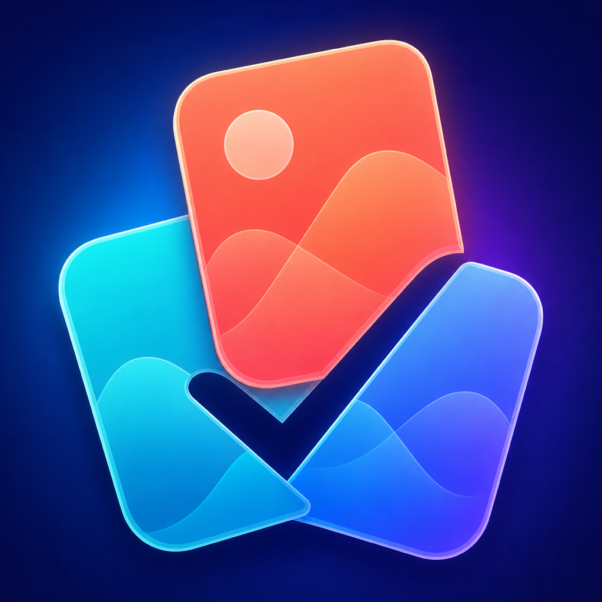

iPhone
Pawference
Eure Lieblingsrassen finden.
Hunde- und Katzenrassen entdecken, Vorlieben vergleichen und gemeinsame Favoriten finden. Allein oder zu zweit.
Beta in Vorbereitung
Pawference entdeckenGemeinsame Favoriten finden. Fotos aufräumen. Bewusster mit deiner Zeit umgehen.
Eure Lieblingsrassen finden.
Hunde- und Katzenrassen entdecken, Vorlieben vergleichen und gemeinsame Favoriten finden. Allein oder zu zweit.
Beta in Vorbereitung
Pawference entdecken
iPhone · iPad · MacMehr Ordnung in Apple Fotos.
Duplikate und ähnliche Aufnahmen prüfen, Albumvorschläge bearbeiten und deine Mediathek bewusst aufräumen.
Geschlossene iOS-Beta
GalleryTidy entdecken iPhone
iPhoneEin Moment für deine Entscheidung.
Ausgewählte Apps zu festen Zeiten begrenzen. Mit einer kurzen Pause entscheiden, ob du sie jetzt öffnen möchtest.
Beta in Vorbereitung
WaitASec entdecken